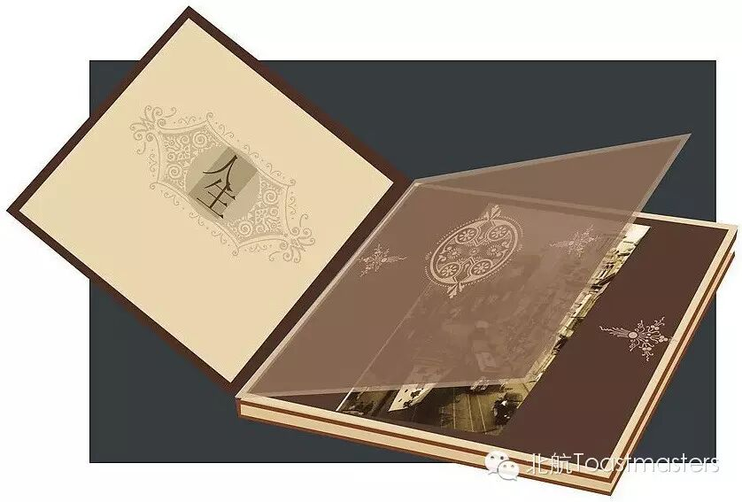
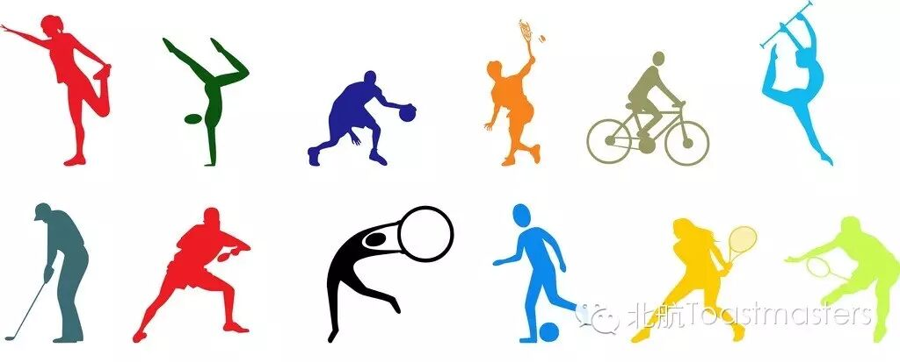
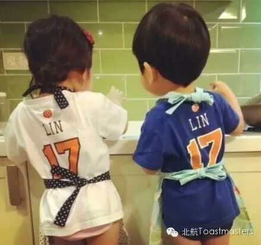

Time: 19:30-21:30,Friday,June.19
Venue: Room B208,New Main Building,Beihang University

Toastmaster: Sophie
Table Topic Master: Joy
Commeration
There are always a lot of things we should keep in mind and never forget. As a member of a nation, we have to keep thehistory of our nation in mind. Where we from, what we experienced, all those things, no matter bad or good, we should always remember. So people create festivals to commemorate something. As a member of family, all the moment you spend with someone together, the more precious it is the more deeply you would miss them after. So people also commemorate something themselves. Every second in one’s life deserves commemoration, what do you think?

Do you like sports? Riding, swimming,jogging, skating… Can you imagine a world without any sports? En….At least, I cannot think out what my life would be without badminton. But why Vance want to say sports make life better? We’ll find the answer this Friday night.
.

Stories in childhood left us much sweet memories, and there must be someone and something unforgettable. This speaker is a special girl and has never been one without stories. What kind of story that Vicky will bring to us this time? Please come here with your ears and heart prepared.
Why TMC? According to official explanation,we provide a positive and supportive atmosphere in which our members can develop their personal communication and leadership skills. But is it the right answer?I think everyone has a unique idea, especially our valuable member Doris.

 点击最上方beihangtmc可订阅哦！
点击最上方beihangtmc可订阅哦！https://mp.weixin.qq.com/s/Nob2qKG0Qd8Gra7lFyPq8A
本页为抢救式本地归档，图文已永久保存。